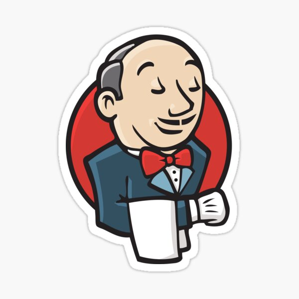
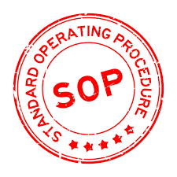
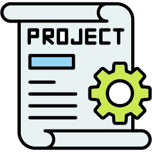

DevOps & Linux Learning Roadmap
Step-by-step roadmap to become a confident DevOps engineer with Linux, CI/CD, automation, and monitoring expertise.
1. Foundation
Learn basic computer concepts, networking, and Linux CLI. Understand DevOps mindset and operational thinking.
2. Linux Skills
Master Linux server management, processes, memory, CPU, networking, and troubleshooting techniques.
3. Git & Version Control
Learn Git basics, branching, collaboration, and integrating version control with CI/CD pipelines.

4. CI/CD & Jenkins
Build pipelines, automate testing, manage artifacts, and implement deployment strategies with rollback safety.
5. Automation & Scripting
Automate repetitive tasks using Bash, Python, and configuration management tools with infrastructure-as-code concepts.
6. Monitoring & Observability
Implement monitoring for Linux, apps, and web servers using metrics, logs, and traces for proactive incident prevention.

7. SOP & Standards
Create Standard Operating Procedures for repeatable operational tasks and understand metrics and documentation practices.

8. Hands-on Projects
Apply skills in real-world scenarios: CI/CD pipelines, health checks, automation scripts, monitoring dashboards, and simulated outages.
9. Career Growth
Develop long-term strategies for growth, continuous learning, community involvement, and improving operational excellence.